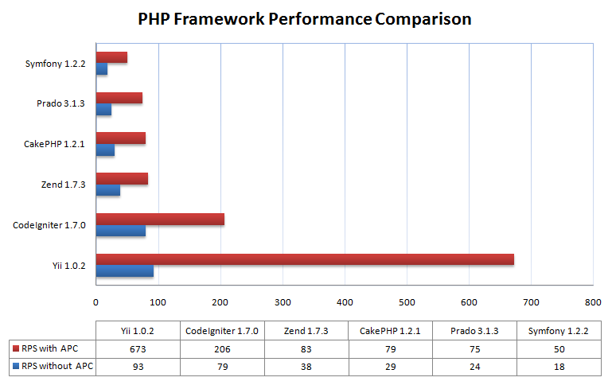

Welcome
to
Yii Training
Prepared by
Shamsher AnsariDay 1
- MVC architecture
- What is MVC architecture?
- How it works.
- Need for framework.
- Introduction to Yii framework
- What is Yii
- Installation of Yii
- Folder structure and files in Yii
- Sample Application
- Sample Application Development.
Day 2
- Fundamentals
- Entry script
- Application
- components
- module
- Conventions
- Code Generations
- GII tool
- creating actions
- creating access rules
- creating models
- creating views
- creating forms
Day 3
- Working with database
- DB connectivity
- Active record
- Query builder
- Relational active record
Day 4
- Theming and extensions
- Applying the theme
- Custom themes
- Extensions
- Error handling and testing
- Error handling
- Testing
Performance
 RPS (Requests Per Second)PHP Framework Usage Statistics

What is Yii
Yii Features
- MVC
- DAO, Query Builder, Active Record, DB Migration
- Form input and validation
- Authentication and authorization
- Skinning and theming
- Internationalization (I18N)
- Error handling and logging
- Automatic code generation
- Extension library
Workflow

http://www.example.com/index.php?r=post/show&id=1
Lets do some practical experiment
Questions ?
Ask Google
"No one knows better then Google"